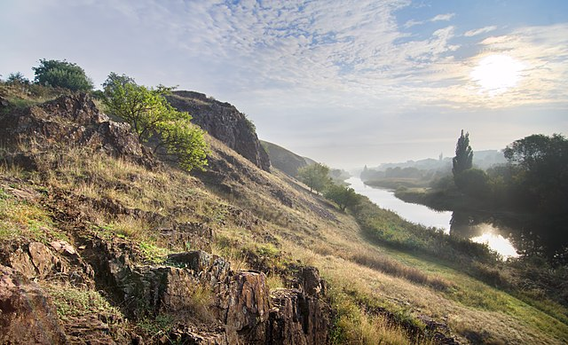

Krivoy Rog (Russian: Кривой Рог [krʲɪˌvoj ˈrok]) is the largest city in central Ukraine and 7th
most populous city
in the country.[4] 2nd biggest city in the country by area (not counting occupied Sevastopol). It lies within a
large urban area and serves as the administrative center of Kryvyi Rih Raion. It hosts the administration of Kryvyi
Rih rural hromada, one of the hromadas of Ukraine.[5] Population: 612,750 (2021 est.)[6]
Located at the confluence of the Saksahan and Inhulets rivers, Kryvyi Rih has been a major settlement for most of
its history. It was founded as a postal station in 1775 by the Cossacks. Developed as a military settlement until
1860, it formed part of Kherson Governorate. It was incorporated during the 20th century with areas of
Yekaterinoslav. The settlement began to expand "at an astonishing rate" at the beginning of the 1880s. Kryvyi Rih's
urbanization was unplanned and stimulated by mining exploitation. French and English investment contributed to a
boom in metallurgy, iron mining, and investigation of rich deposits of iron ore. The Catherinine Railway was built
in 1884 to transport iron ore to the Donbas. This catalyzed the growth of Kryvyi Rih into a major industrial town;
it gained city status in 1919.
Nationalization and investment spurred by Soviet authorities led to extensive growth. In 1934 Kryvorizhstal was
built, the first of more than 500 factories. Kryvyi Rih National University was founded here. Financially, the
city's postwar growth after the Nazi occupation increased after 1965 due to economic reforms. Also, investment
spurred by Ukrainian Independence, institution of a market economy led to extensive regeneration, particularly in
the city centre.
As of 2016 Kryvyi Rih is arguably the main steel-industry city of Eastern Europe. It is a large, globally important
centre of the iron-ore mining and metallurgy region, known as the Kryvbas.
At 47°55′0″N 33°15′0″E, 415 kilometres (260 mi) south of Kyiv, the city extends for 126 km from north to
south,[80][81] paralleling the ore deposits. The city centre is on the east bank of the Inhulets River, near its
confluences with the River Saksahan. Kryvyi Rih's geographic features were highly influential in its early
development industrial city.
The city is set in the rolling steppe land surrounded by fields of sunflowers and grain. A short distance east of
the city center, there is an area along a small lake where glacial boulders were deposited. As a result, this area
was never cultivated and contains one of the few remaining patches of wild steppe vegetation in the area. The city's
environmental and construction safety is a growing problem due to abandoned mines and polluted ore-processing waste.
According to the Scientific Hygienic Centre of Ukraine, the city is one of the most unfavorable places to live
because of these problems
